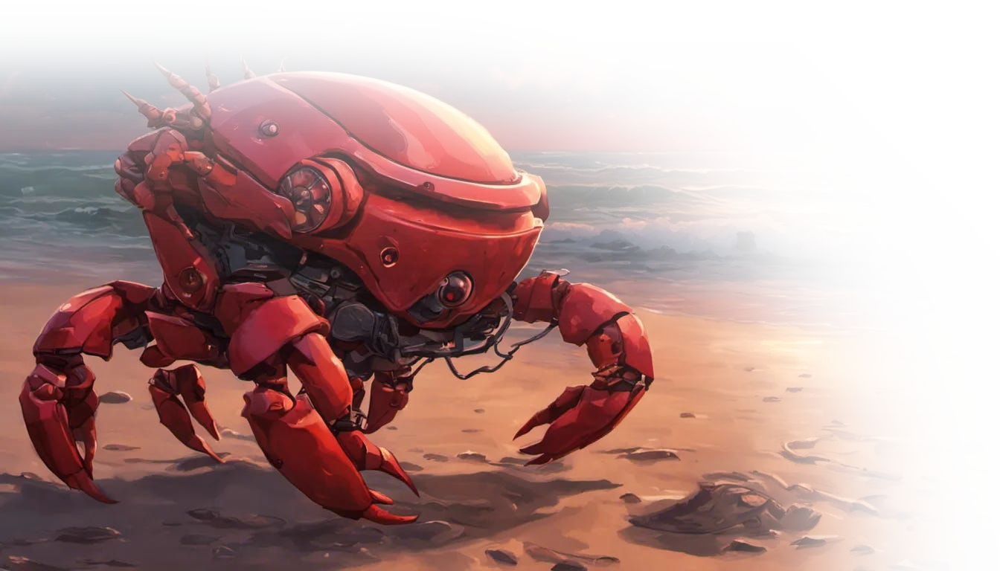

use actix_web::{web, App, HttpServer, HttpResponse, Responder};
use serde::{Deserialize, Serialize};
#[derive(Serialize)]
struct User { id: u32, name: String }
#[derive(Deserialize)]
struct Query { name: String }
async fn hello(query: web::Query<Query>) -> impl Responder {
HttpResponse::Ok().json(User {
id: 1,
name: query.name.clone(),
})
}
async fn health() -> impl Responder {
HttpResponse::Ok().body("سرور سالم است ✅")
}
#[actix_web::main]
async fn main() -> std::io::Result<()> {
HttpServer::new(|| {
App::new()
.route("/hello", web::get().to(hello))
.route("/health", web::get().to(health))
})
.bind("127.0.0.1:8080")?
.run()
.await
}use axum::{routing::get, Router, Json};
use serde::Serialize;
#[derive(Serialize)]
struct Message { text: String }
async fn root() -> Json<Message> {
Json(Message { text: "سلام از Axum!".to_string() })
}
async fn user(
axum::extract::Path(id): axum::extract::Path<u32>
) -> Json<Message> {
Json(Message { text: format!("کاربر شماره {}", id) })
}
#[tokio::main]
async fn main() {
let app = Router::new()
.route("/", get(root))
.route("/user/:id", get(user));
let listener =
tokio::net::TcpListener::bind("0.0.0.0:3000").await.unwrap();
axum::serve(listener, app).await.unwrap();
}